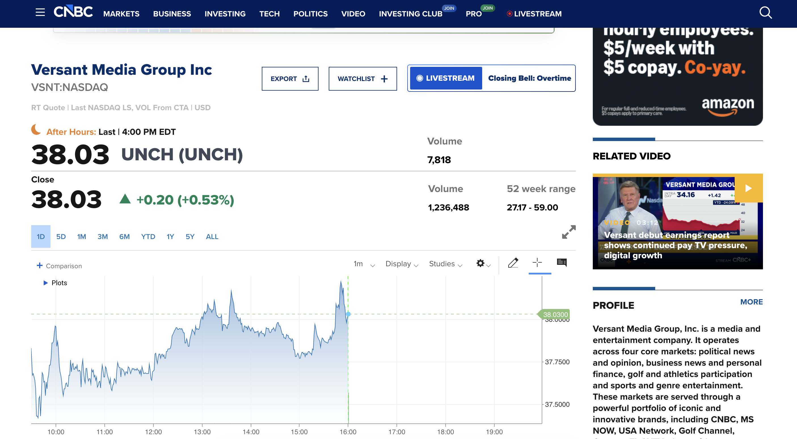

Production work leading engineering alongside product, internal market-data owners, and backend teams on a high-traffic quote experience—defining how financial data reached the UI through REST and GraphQL, and shipping a chart-centric layout users rely on throughout the trading day.

Oversaw frontend development and partnered across disciplines to keep delivery aligned with product goals and platform realities—translating roadmap needs into feasible contracts, incremental releases, and stable operations.
The page combined multiple data shapes: real-time and delayed fields, reference data, and aggregates suited to different consumers. We used REST where resource-style endpoints and caching patterns fit, and GraphQL where clients needed to compose fields, avoid over-fetching, or query graph-shaped relationships in one round trip. Aligning those choices with backend capacity and client performance was a core part of the work.
Quote UIs only work when engineers and partners share a precise vocabulary for market data asset types—equities, options, fundamentals, and related identifiers and conventions. Part of my job was helping the team reason about field meaning, edge cases, and how data behaves in production so API contracts and UI states did not drift from reality.
The interactive price chart was a centerpiece: time-range selection, historical and intraday series, and responsive rendering alongside the rest of the page. Integrating it end-to-end—data plumbing, loading and empty states, and performance—was a major cross-team effort tied directly to user trust in the product.
Screenshot reflects the type of experience shipped on CNBC; branding and layout are property of NBCUniversal / CNBC. This page is a personal case study and is not an official CNBC communication.